プロジェクト : Projects¶
AWX で GitLab 上のプロジェクトを使用できるよう設定します。
GitLab のプロジェクトのアドレスを取得¶
実行するプレイブックを含むプロジェクトをクリック
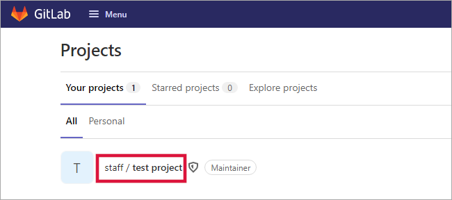Clone をクリック
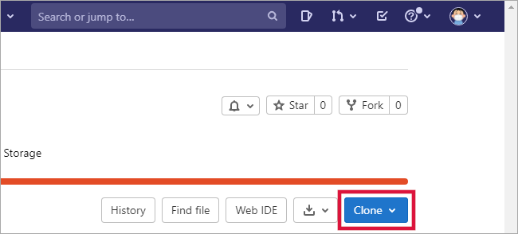「 Clone with SSH 」欄の URL をクリップボードにコピー
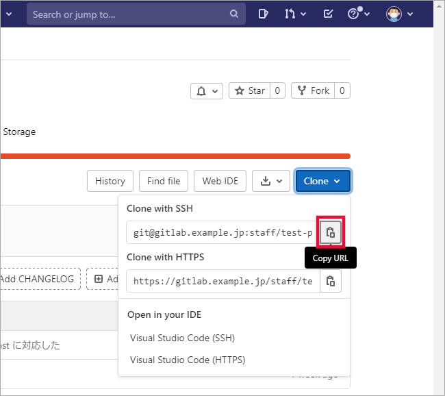クリップボードにコピーした URL をテキストエディタに貼り付け
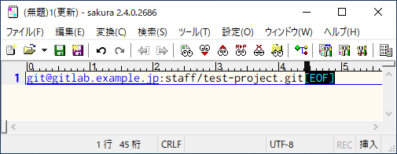
プロジェクトを登録¶
プロジェクト をクリック
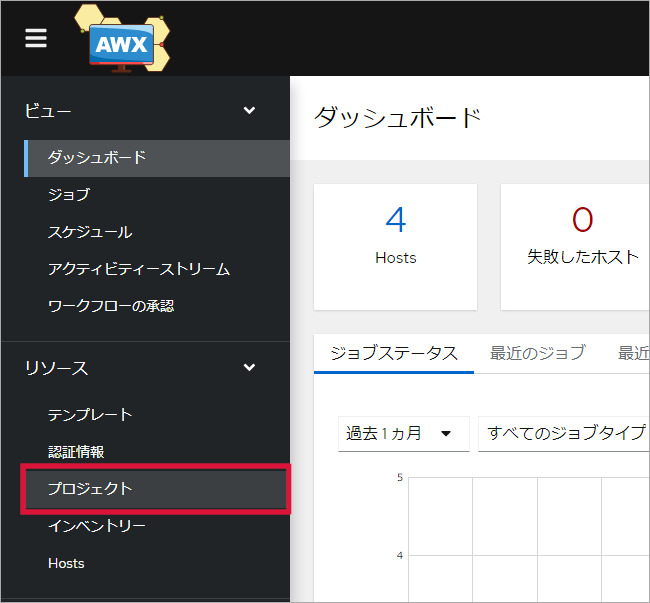追加 をクリック
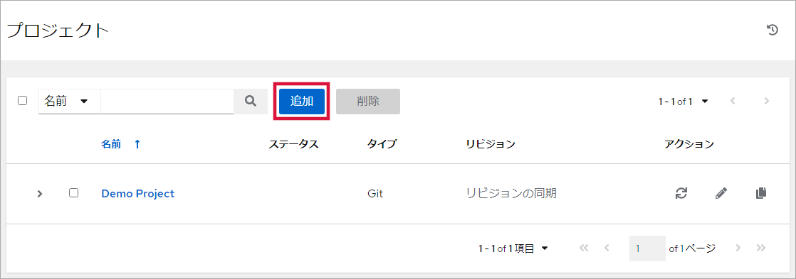各項目に値を入力
項目名
入力する値
名前
プロジェクトの名前
説明
プロジェクトの説明
組織
「 組織 : Organizations 」で登録した組織を選択
Default Execution Environment
空欄
ソースコントロール認証情報タイプ
プルダウンリストから Git を選択
ソースコントロールの URL
テキストエディタに貼り付けた URL を貼り付け
ソースコントロールブランチ/タグ/コミット
空欄
ソースコントロールの Refspec
空欄
ソースコントロール認証情報
「 GitLab サーバーに接続するための認証情報を登録 」で作成した認証情報を選択
オプション
必要な項目にチェックを入れる
キャッシュタイムアウト
「オプション」の「起動時のリビジョン更新」が有効なとき、キャッシュに要するときのタイムアウト時間を設定
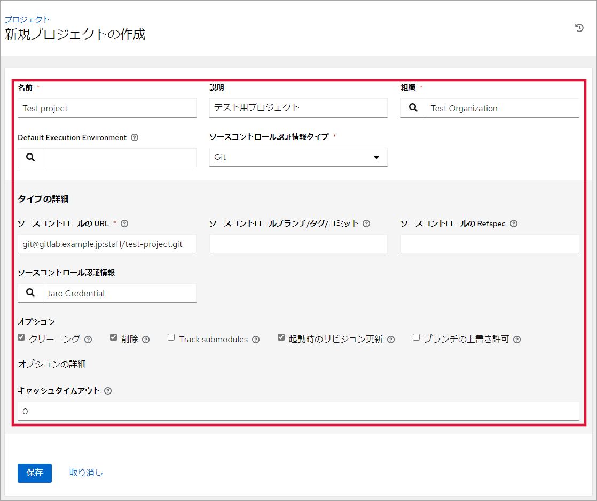オプション¶ クリーニング
更新の実行前にローカルの変更を削除する
削除
更新の実行前にローカルリポジトリーを完全に削除する
Track submodules
サブモジュールは、master ブランチ (または .gitmodules で指定したその他のブランチ) の最新のコミットを追跡する
起動時のリビジョン更新
ロールおよびコレクションが最終更新で最新の状態にする
ブランチの上書き許可
ジョブテンプレートで、ソースコントロールのブランチやリビジョンの変更を許可する
保存 をクリック
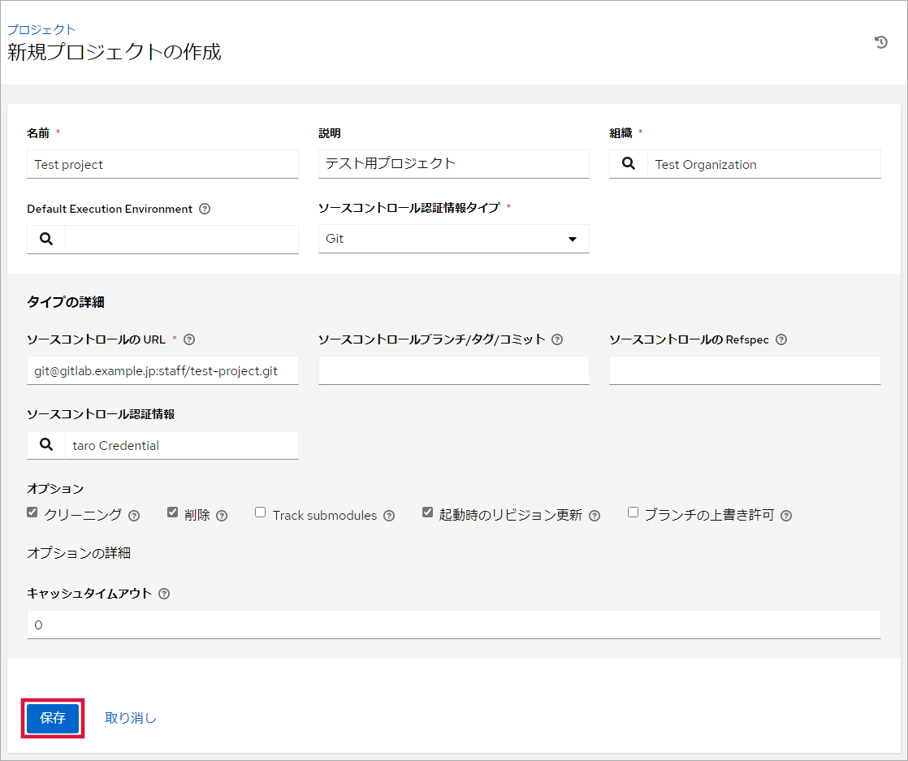GitLab と同期中
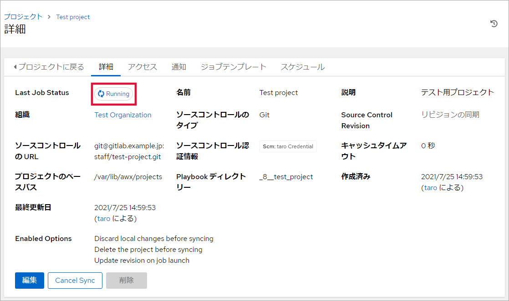Note
自動で同期しない場合 同期 をクリックして同期してください。
GitLab のプロジェクトが更新された場合、必ず同期が必要です。
同期成功
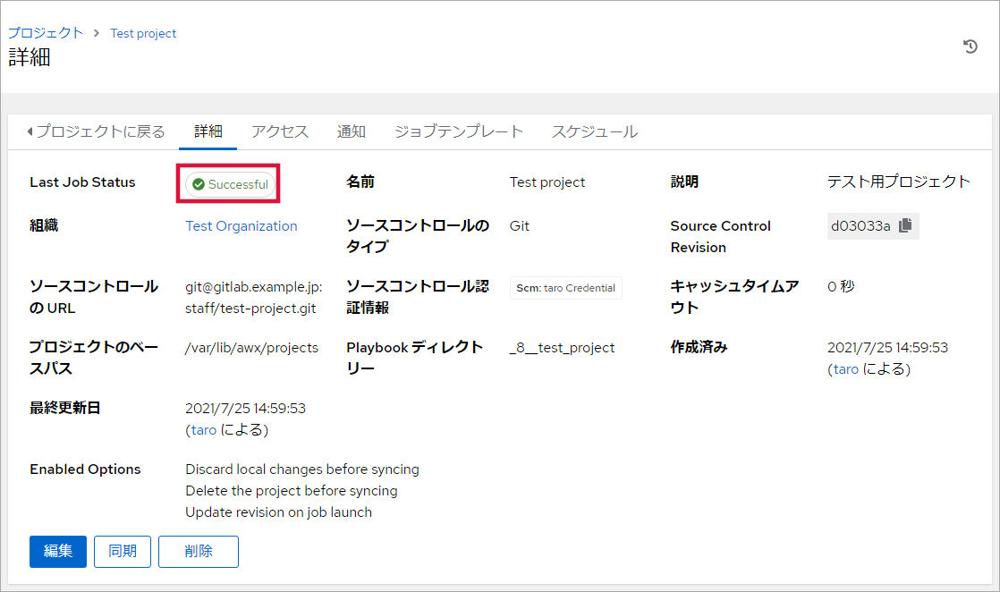Note
「 Last Job Status 」が “Successful” 以外のときは設定情報に誤りがあります。 編集 をクリックして設定画面に戻って内容を見直してください。
認証情報に誤りがあると “Successful” になりません。「 GitLab サーバーに接続するための認証情報を登録 」で登録した内容を確認してください。
プロジェクトに戻る をクリック
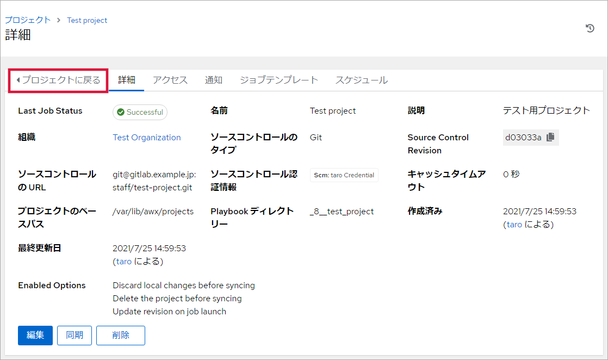登録したプロジェクトを確認
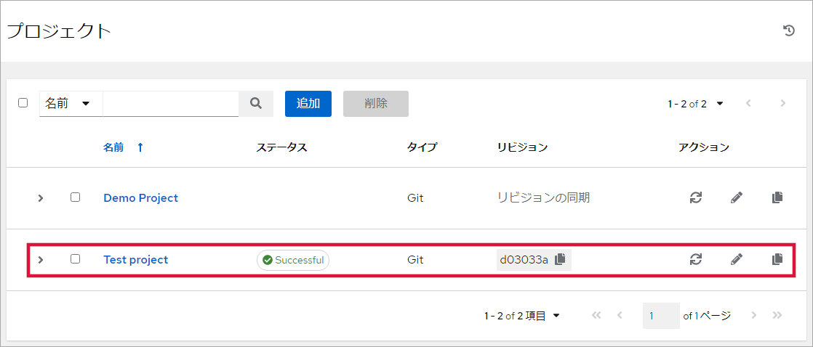
{kind=link}
{kind=link}
{kind=link}
{kind=link}
{kind=link}
{kind=link}
{kind=link}